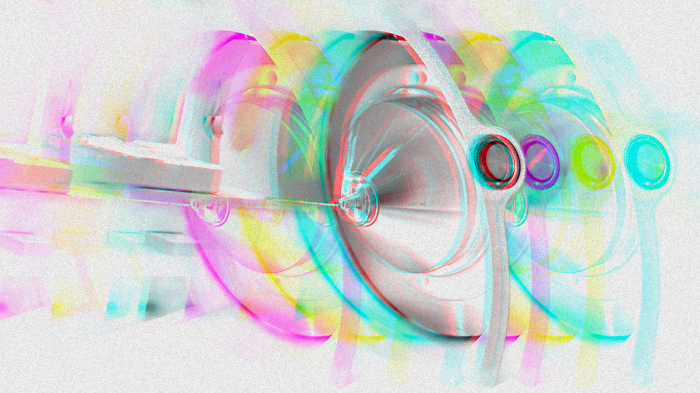

- Host & bacterial proteome organization: Understanding how proteins are structured, localized, and remodeled across host and microbial cells.
- Protein–RNA interactions: Studying dynamic complexes between regulatory proteins and RNA molecules.
- Infection-driven protein & PTM dynamics: Analyzing dynamic expression and PTM crosstalk (phosphorylation, glycosylation) during active infection and immune signaling.
- Stress-driven proteome remodeling: Characterizing adaptive changes in translation, ribosome stability, and secretomes in response to nutrient limitation and cellular stress.

Proteomics Platform Leadership
I manage state-of-the-art mass spectrometry operations providing end-to-end analytical services to >30 researchers across MPUSP and collaborating institutes. Since 2021, the platform has delivered results for over 200 registered project submissions and 25 external collaborations, backed by automated sample processing (Agilent Bravo), our Karuppar automated LC-MS/MS QC system, and FAIR-compliant data dissemination.